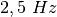

Resonance of a driven pendulum
Objective
Demonstrate the resonance of a driven pendulum.


Procedure
Make a pendulum using two button magnets and a piece of paper. Suspend it and place the 3000T coil near that, as shown in figure.
- Connect the coil between SQ1 and ground
- Calculate the resonant frequency from the length of the pendulum
- Scan the frequency around the expected resonance frequency
Discussion
When SQ1 reaches the resonant frequency of the pendulum, the amplitude
goes up due to resonance. A 4 cm (from the center of the magnet to the
axis of oscillation) long pendulum resonated at around , almost
tallying with its calculated natural frequency. The resonant frequency
of the pendulum is given by  , where
, where  is the
distance from the center of the magnet to the point of suspension and
is the
distance from the center of the magnet to the point of suspension and  is the acceleration due to gravity.
is the acceleration due to gravity.
Repeat the experiment by changing the length of the pendulum.